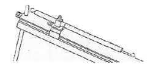

| Anexo: | ||
| RIEL DE SOPORTE-PIE (LONGITUD:30 cm.) | ||
Perforaciones con tornillos ajustables para varillas de soporte. En el lado inferior un tornillo de apriete para el soporte de la pinza de mesa con ranura. Utilización con la pieza de unión para rieles. Utilización como pie de soporte. Varilla de soporte de 25 cm. con capuchones de plástico (capuchones desmontables) |
||
| PIEZA DE UNION DE RIELES | ||
| Pieza de unión para rieles como juntura para dos rieles de soporte (plano inclinado, banco óptico). Longitud: 60 cm. | ||
| PINZA DE MESA | ||
Pinza de mesa con ranura. En el lado inferior del riel de soporte un tornillo de apriete para el soporte de la pinza de mesa con ranura (el riel de soporte por lo tanto puede ser fijable sobre un tablero de mesa) |
||
| JINETE PARA VARILLAS DE SOPORTE | ||
Para colocar y fijar sobre rieles de soporte. Para el soporte de varillas de soporte. |
||
| JINETE CON RANURA | ||
Para colocar y fijar sobre rieles de soporte y para el soporte de varillas de soporte, pantallas, escala. |
||
| NUEZ |
||
Perforaciones con tornillo de apriete para varillas de soporte Perforaciones con tornillo de apriete para varillas de soporte y anillos de soporte Ranura para soporte de muelles de lámina, láminas bimetálicas, etc. Perforación para soporte de bulones, de cojinetes y poleas con estribo |
||
| BULONES DE COJINETES | ||
|
|
Para soporte de poleas (polea fija), muelles helicoidales, etc. | |
| SOPORTE PARA DINAMÓMETRO | ||
|  | Para montar en el jinete, para varillas de soporte y para el soporte de dinamómetros. | |
| NUEZ REDONDA | ||
Utilización como manguito de empalme para varillas de soporte. Nuez de soporte para rieles de soporte (plano inclinado) |
||